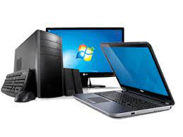
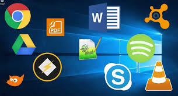

 <html>
</html>
<head>
<title>Meu primeiro site- davi</title>
<style>
.tudo{
border:solid 1px  red;
}
.software{
border:solid 1px  blue;
width:30%;
}


.windows{
border:solid 1px  blue;
width:30%;
}
</style>
</head>
<body>
<h1>Site do davies✌😘😘</h1> 
<h1>Conteúdos </h1>
 
<ul>
<li> o que é software?</li>
<li>software de programação </li>
<li>  sistemas operacionais.</li>
<li>  software de sistema </li>
<li>  software de aplicação </li> 
<li>  software Livre </li>
<li>  software Web ou Web App
<li>  software de Inteligência Artificial 
</ul>
<div class="tudo">
<div class="software">
<h1>o que é software?</h1>
<p>O que é software? São os programas que nos permitem realizar tarefas específicas em um computador. Por exemplo, os sistemas operacionais, aplicativos, navegadores web, jogos entre outros. Esses dois elementos sempre trabalham de mãos dadas.</p>
<h5> Chrome, calculadora, Windows Media Player, Microsoft Word, AutoCAD, Adobe Photoshop.</h5>


<h1>software de programação</h1>
<p>É um conjunto de programas que define o padrão de comportamento do equipamento, tornando-o utilizável, ou seja, são os programas usados para permitir o funcionamento do hardware.</p>
<h5>Word, Exel, Paint, Bloco de notas, calculadora.</h5>


<h1>sistemas operacionais</h1>
<p>O sistema operacional é um software, ou um conjunto de softwares, que tem como papel gerenciar e administrar todos os recursos presentes em um sistema. </p>
<h5>Linux, Windows, Android, macOS, UNIX.</h5>


<h1>software de sistema</h1>
<p>O software de sistema é um conjunto de informações processadas pelo sistema interno de um dispositivo que permite a interação entre usuário e o hardware. Também é responsável por gerenciar a eficiência de desempenho do aparelho.</p>
<h5>Windows, Android, iOS.</h5>


<h1>software de aplicação</h1>
<p>O software de aplicação é criado, em regra, para executar tarefas específicas tal como o processamento de texto, reprodução de áudio.</p>
<h5>Microsoft Word, Spotify, Calculadora, Instagram, TikTok.</h5>


<h1>software livre</h1>
<p>Por “software livre” devemos entender aquele software que respeita a liberdade e senso de comunidade dos usuários. Grosso modo, isso significa que os usuários possuem a liberdade de executar, copiar, distribuir, estudar, mudar e melhorar o software.</p>
<h5>sistema operacional Linux;
linguagens Java e PHP;
banco de dados MySQL;
programa de escritório LibreOffice (alternativa gratuita do pacote Office da Microsoft);
e-mail gratuito Thunderbird.</h5>


<h1>software Web ou Web App</h1>
<p>Em resumo, as Web Apps são aplicações de software executadas num navegador de Web e que podem ser acedidos pela Internet. São desenvolvidas por programadores de aplicações e podem ser usados em qualquer dispositivo com um navegador de web e acesso à Internet.</p>
<h5>Twitter. Apesar de poder encontrar o app do twitter nas lojas de aplicativos, a rede social pode ser facilmente acessada pelo navegador do seu dispositivo. ...
Pinterest. O Pinterest é uma rede social de compartilhamento de imagens. ...
YouTube. ...
Uber.</h5>


<h1>software de Inteligência Artificial</h1>
<p>Os softwares de inteligência artificial, ou software IA, imitam o comportamento humano e os padrões de aprendizado. Um programa de inteligência artificial pode ser utilizado em várias áreas de negócios, desde atendimento ao cliente e vendas (na forma de chatbots) até análise de dados e automação de tarefas de TI.</p>
<h5>assistentes de voz como Alexa e Siri, algoritmos de redes sociais, ferramentas de reconhecimento facial como Face ID, entre outros.</h5>


</div>
<div class= "windows">
 

<h1>windows 1</h1>
<p>
A primeira versão do SO foi lançada no longínquo ano de 1985 e era mais uma extensão do MS-DOS do que um software completo. Ele se caracterizava pelo modelo colorido na tela e aplicações como bloco de notas e até um Paint. Ele não permitia a sobreposição de janelas, por exemplo, e por isso todas elas ficavam expostas lado a lado.
</p>


<h1>windows 2</h1>
<p>Windows 2.0 foi uma interface gráfica de usuário (GUI) entre o sistema operacional Microsoft DOS e o computador, é a segunda versão da família Windows desenvolvido pela empresa norte-americana Microsoft lançado em 9 de dezembro de 1987, sucessor da versao Windows 1.x. Inicialmente, este não era um sistema operacional próprio, era apenas uma interface no modo gráfico que com o auxílio do dispositivo mouse facilitava o uso do computador com sistema MS-DOS, com funcionalidades relativamente limitadas. 
</p>


<h1>windows 3</h1>
<p>Os ambientes operacionais Windows 3.x da família Microsoft Windows com recurso de interface iconográfica e janelas, lançados entre 1990 e 1996. A versão 3.0 foi a primeira versão mais amplamente usada do Windows, permitindo que a empresa Microsoft competir com o sistema Macintosh da empresa Apple Inc., e com o computador Amiga da empresa Commodore Business, que utilizavam uma GUI (Interface Gráfica do Utilizador).
</p>


<h1>windows 4</h1>
<p>Embora oferecesse maior estabilidade do que o Windows 95, era menos flexível do ponto de vista de um computador desktop. Grande parte da estabilidade foi alcançada graças à virtualização do hardware e aos aplicativos que acessavam o sistema através das APIs em vez de usar diretamente o hardware como era feito no MS-DOS
</p>


<h1>windows 5</h1>
<p>Microsoft Windows (ou simplesmente Windows) é uma família de sistemas operacionais desenvolvidos, comercializados e vendidos pela Microsoft. É constituída por várias famílias de sistemas operacionais, cada qual atendendo a um determinado setor da indústria da computação, sendo que o sistema geralmente é associado com a arquitetura IBM PC compatível. 
</p>


<h1>windows 6</h1>
<p>Também conhecido como Windows NT 6.0 e pelo nome de código Longhorn, o Windows Vista tem seis versões, uma delas simplificada e destinada aos países em desenvolvimento. Foi lançado em novembro de 2006 e suas vendas ao público começaram em 30 de Janeiro de 2007.
As seis edições diferentes do Windows Vista foram projetadas para se ajustar ao modo como o usuário pretende usar seu PC.
</p>


<h1>windows 7</h1>
<p>O Windows 7 chegou ao mercado em outubro de 2009 e tornou-se um dos sistemas operacionais de maior sucesso. Atualmente, porém, não é mais possível fazer o download do Windows 7, pois não há mais suporte para o sistema.
</p>


<h1>windows 8</h1>
<p>O Windows 8 é uma versão do Microsoft Windows, uma série de sistemas operacionais desenvolvidos pela Microsoft para computadores pessoais, laptops e tablets.[4] É o sucessor do Windows 7. Foi anunciado oficialmente por Steve Ballmer, diretor executivo da Microsoft, durante a conferência de pré-lançamento do sistema operacional. 
</p>


<h1>windows 10</h1>
<p>Windows 10 é uma versão do Microsoft Windows, uma série de sistemas operativos comercializados pela Microsoft. A sua primeira versão de testes foi lançada em 1 de outubro de 2014 e o lançamento oficial foi em 29 de julho de 2015.[6] Foi o sucessor do Windows 8.1. O Windows 10 foi disponibilizado para download via MSDN e Technet como uma atualização gratuita para cópias de varejo de usuários do Windows 8 e Windows 8.1 através da Windows Store e também para usuários do Windows 7 via Windows Update no primeiro ano de lançamento.
</p>


<h1>windows 11</h1>
<p>Windows 11 é a versão mais recente do sistema operacional da Microsoft para computadores. Lançado em 5 de outubro de 2021, o sucessor do Windows 10 vem com visual mais limpo e minimalista, incluindo ícones remodelados, janelas translúcidas, nova iconografia e um Menu Iniciar centralizado.
</p>


<h1>Linux mint</h1>
<p>
</p>

</body>
</html>


